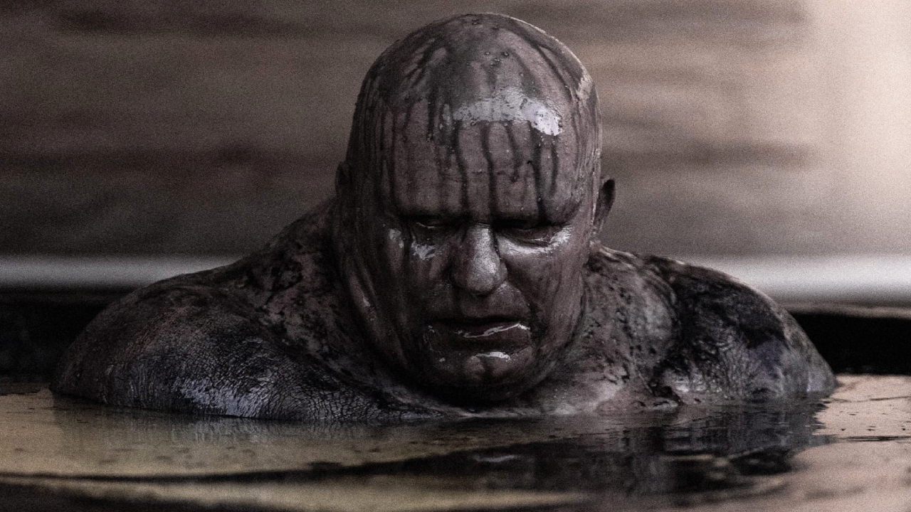

HOUSE HARKONNEN
Baron Vladimir Harkonnen
All-Consuming Evil.
Greed and tyranny personified, Baron Vladimir Harkonnen is a force of malevolence, determined to feed his addiction to brutality. A gravity-defying monster of a man, gliding through the air like a phantom, the imposing figurehead of House Harkonnen ensures his family stands in stark opposition to House Atreides, ruling through fear, and determined to exploit the natural resources of Dune no matter the cost to its people.
